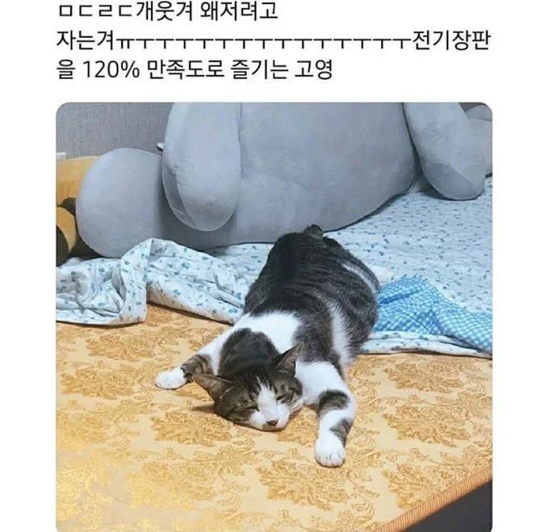
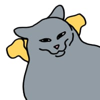
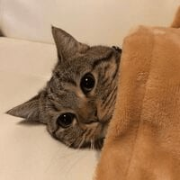

전기장판만족도 120%인 고양이
댓글

장판에 붙었네ㅋㅋㅋㅋ

하찮은 표정 ㅋㅋㅋㅋㅋㅋㅋㅋㅋㅋㅋ

이것이 극.락
캠핑할때 전기장판 트니까 길고양이 오는 이유가 이거였군!
ㅁㄷㄹㄷ가 뭐임? 모드레드?
레알 마드리드
고양이들 겨울철만되면 전기장판에서 살음 ㅋㅋ
ㅋㅋㅋㅋ 뱃살 퍼진거봐 배방구마렵네

장판에 붙었네ㅋㅋㅋㅋ
하찮은 표정 ㅋㅋㅋㅋㅋㅋㅋㅋㅋㅋㅋ

이것이 극.락
캠핑할때 전기장판 트니까 길고양이 오는 이유가 이거였군!
ㅁㄷㄹㄷ가 뭐임? 모드레드?
레알 마드리드
고양이들 겨울철만되면 전기장판에서 살음 ㅋㅋ
ㅋㅋㅋㅋ 뱃살 퍼진거봐 배방구마렵네
